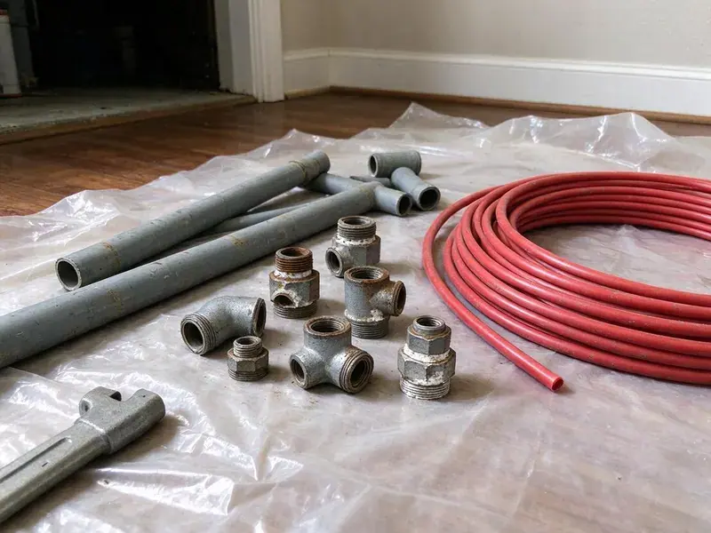

Water Softener Replacement in Largo, FL
Softener replacement in Largo, FL from HDF Plumbing, with a new bypass and air-gapped drain.
- Upfront Pricing
- Loop and Bypass Valve Work
- Fleck and Clack Valves
- Tidy Installs

Softener Quit? Get a Free Estimate in Largo, FL.
Call HDF Plumbing for a written quote and a hardness test.
Licensed Softener Replacement for Largo, FL
HDF Plumbing handles complete water softener replacement for homes across Largo, FL. When the old unit is failing or the water feels off, our licensed plumbers test it, walk you through the readings and put in a metered system. You see the readings first.
Some of what we do:
- Programming and testing after installation.
- Resin sizing from tested hardness and usage.
- Careful installation of all softener types

Additional Plumbing Replacement Services in Largo, FL
When repairs are no longer enough, our replacement services in Largo, FL deliver durable upgrades that restore full performance.


Customers
Why Choose HDF Plumbing for Water Softener Replacement in Largo, FL?
Old softeners lose capacity as the resin breaks down and the valve seals wear. A new system with fresh resin and a metered valve can use noticeably less salt and water while softening better than the old unit ever did in its last few years. Most people notice in the shower first.
- Tested Hardness, We measure your actual water hardness instead of estimating a system size.
- Proper Sizing, We measure your hardness and estimate usage to size the resin bed correctly.
- Local Water, Our plumbers have tested the water around Largo, so the system fits what comes out of your tap.
Citywide Coverage
Every neighborhood in Largo is in our service area for softener replacement. Our crews handle garage installs and outdoor units by the main line every week. Openings come up fast.
Experienced Team
Our plumbers know the water conditions homes face across Florida, from hard municipal supplies to private wells with iron and sulfur. They diagnose old units fast. Then they install the right replacement.
Safety-First Approach
Cross connections are a common mistake on DIY softener installs, usually a drain hose stuffed down into a standpipe with no gap. We correct them on the spot. It costs nothing extra.
Trusted Certified Largo Plumbing Services Professionals
At HDF Plumbing, we are proud to offer certified plumbing services throughout Largo, FL. Those papers on the wall mean something. Every repair, install and maintenance visit follows strict safety and quality rules, and the plumbers doing the work carry recognized industry credentials.
Call Us Now PHCC Plumbing Contractor Recognition
PHCC Plumbing Contractor Recognition Better Business Bureau (BBB) Accreditation
Better Business Bureau (BBB) Accreditation Angi Certified Pro
Angi Certified Pro ISO 9001 Quality Management Certification
ISO 9001 Quality Management CertificationSoftener Systems We Replace in Largo, FL
Salt-Based Water Softener Replacement in Largo
Salt-based softeners pull calcium and magnesium out of the water by trading them for sodium on a bed of resin beads, which is the only method that actually makes water soft. We replace timer units with metered valves that regenerate on gallons used. You will buy less salt. The brine setting gets matched to your hardness so the unit is not wasting salt with every cycle.

Long-Term Softener Costs in Largo, FL
Long-term cost on a softener is mostly salt and water. Compared with a timer unit, a metered valve set efficiently often uses a third less salt, which matters over a fifteen-year life. We compare brands on that basis.
Salt-Free Alternatives in Largo, FL
Some homeowners do not want salt or have no drain near the main line. In those cases a TAC conditioner works, though we are upfront that it stops scale and does not make water feel soft. Sodium concerns are another reason.
Softener Replacement on a Budget in Largo, FL
Capacity and valve brand set most of the price. A basic 32,000-grain metered unit costs far less than a twin-tank Kinetico, and for a small household on moderately hard water it may be all you need. We show both options side by side.
Softener Failure Diagnosis in Largo, FL
A clogged injector, a dead motor or a wrong setting can make a good softener look finished. Hardness gets tested on both sides of the unit, and the cheap fixes get tried before we talk replacement. Discontinued valves usually mean replacement.
Replacing Pelican Water Systems in Largo
Pelican systems usually combine a carbon filter with either a salt-based softener or a salt-free conditioner in one setup on the main line. Depending on how old it is, we swap media or the full unit. Installed to spec, the warranty stays valid.
Salt-Based Softener Swaps in Largo, FL
Swapping a salt-based softener in Florida homes means disconnecting the old resin and brine tanks, cutting in new fittings if the loop is corroded, and setting the new valve. Every joint gets checked for leaks under pressure. We set an air gap on the drain line.

Dual Tank Softener Systems in Largo
Twin-tank systems keep one tank in service while the other regenerates, so you never get hard water during a middle-of-the-night regeneration. Kinetico runs them without electricity, using water flow to drive the valve. The price is higher.
Local Water Softener Replacement in Largo, FL
Nearby crews keep scheduling short. HDF Plumbing has plumbers working across Largo, so a softener estimate is usually a same-week appointment and the install often happens on the same visit. Many homes have soft water by dinner.
Local water varies. Hardness can be very different between a city supply and a private well a few miles out, and iron or chlorine changes what else the system needs. The system matches your test, not a guess.
HDF Plumbing at a Glance
- Licensed and insured plumbers serving Largo, FL
- Same-day appointments and 24/7 emergency response
- Upfront, flat-rate pricing before work begins
- 4.9-star rated by 739+ Florida customers
Largo Map
Largo Information
- Population
- 82,248
- Area codes
- 727/813/941
- Service area
- Largo and communities within 40 miles
- Nearby
- Pinellas Park, Clearwater, Palm Harbor, St. Petersburg
Water across much of Florida comes from limestone aquifers and runs hard, leaving stubborn scale on fixtures and inside water heaters. A properly sized replacement softener protects water heaters and fixtures in Largo, FL from steady scale buildup.
Talk to a Plumber
Call HDF Plumbing for honest, reliable plumbing from people who know the trade in Largo, FL.
Our Specialized Plumbing Services in Largo, FL
At HDF Plumbing, you get every kind of plumbing service from one company across Largo, FL. We go from leak detection all the way to full system installations, for homes and commercial buildings, and we do it quickly at a fair price. Here are the core services we offer:


Our Softener Replacement Steps in Largo, FL
Every softener job in Largo, FL follows the same order: test, remove, install and program.
Schedule a Visit
Call (904) 925-7356 or book online. We discuss your water issues and set a time.
On-Site Check
Our technician tests hardness, looks at the existing system and walks through replacement options that fit your needs and budget.
Swap the System
We remove the old softener and install the new one, with secure connections, a correct drain line and the valve programmed.
Frequently Asked Questions About Water Softener Replacement in Largo
Most homeowners in Largo, FL spend between $1,500 and $4,000 on a replaced softener, installed. Capacity and brand drive most of it, plus any new loop or prefilter. You get a written quote after the water test.
A like-for-like swap generally does not need a permit. Installing or relocating water or drain lines can trigger one, and the rules differ from one jurisdiction to the next in ways that are hard to predict. You will know before we start.
Water across much of Florida comes from limestone aquifers and runs hard, leaving heavy scale on fixtures and inside water heaters. Hard water carries dissolved calcium and magnesium that drop out as scale wherever water gets heated or sits still for long. Water heaters wear out sooner, and glassware spots. Softening the water prevents it.
Ten to fifteen years with decent care, sometimes longer. Hard water, heavy use and chlorinated supplies wear resin out sooner. A yearly check helps.
Spots on dishes and crusty faucets are the usual clues. Salt that never drops or a brine tank that overfills are warning signs too.
Sometimes, if the old unit was undersized or clogged with scale. Removing hardness is the softener's job, not raising pressure, so for low pressure we also check the regulator and the supply line. The regulator is a common culprit.
Sizing comes from two numbers: your hardness in grains per gallon and how many gallons the household uses a day. Multiply them and you get grains per day. The resin bed gets sized for a regen every three to seven days.
Usually not, for a straight swap. A permit may come into play if we run new water lines, add a drain or change the system type in a way that alters the plumbing. We confirm before work starts.
What Our Customers Say About Our Plumbing Experts

Jessica T.
We were adding a gas range in a kitchen remodel and needed a new line run from the meter. The plumber pulled the permit, ran the pipe through the crawl space, and had it inspected and approved within the week.
Gas Line Repair · Largo, FL
Nathan E.
Our tankless heater kept throwing an error code and shutting off mid shower. The tech flushed the heat exchanger, which was full of scale, and replaced a bad flow sensor. Hot water has been steady for half a year now.
Water Heater Repair · Clearwater, FL
Angela D.
Our sump pump quit during a storm and the water was an inch from the basement carpet. HDF Plumbing put in a new pump with a battery backup that same evening. We have had two heavy rains since. It kicked on both times.
Sump Pump · St. Petersburg, FLKaren W.
After our third pinhole leak in copper, we stopped patching. HDF Plumbing gave us a written plan room by room and repiped the house in PEX while we stayed in it. The crew covered our floors every morning and cleaned up every night.
Repiping · Town 'n' Country, FL
Brian W.
I smelled gas behind the dryer and called right away. The plumber found a corroded flex connector, replaced it, and pressure tested the whole line before turning the gas back on. He let me watch the gauge hold steady for fifteen minutes.
Gas Line Repair · Tampa, FLTyler J.
We bought a taller comfort height toilet for my dad, who just had knee surgery. The plumber pulled the old one, found the flange was cracked, and replaced it before setting the new bowl. Took about two hours.
Toilet Installation · Palm Harbor, FL